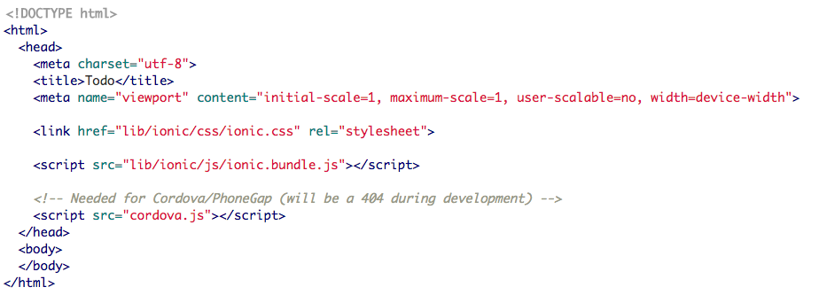

What is Ionic Mobile Development?
Framework for apps with performance and modern web standards in mind
Basically AngularJS and CSS framework for phone apps (or web apps)
Free Open Source
Works across multiple platforms w/ one code base
Components are what make Ionic.
Carries on from Angular (underlying framework that goes hand-in-hand with Ionic)
Reusable UI elements that are essentially the building blocks that allow quick models, interfaces, cards, pop ups, and more
Documentation
It wouldn't be Ionic without APIs
Component APIs:
APIs provided by Ionic 2 that are implemented in the UI and have their own properties and events
Ex: Checkbox, Toggle, Item
Service APIs:
APIs that are used in conjunction with other classes
Ex: MenuController (deals w/ sidebars on apps),
Config (allows you to configure tab placement, icons etc),
Platform (provides information on how app is viewed)
Starting an App
To make a very simple Ionic app, first make an index.html An example looks like
Next, initialize an angular JS file with
angular.module('name',['ionic'])
Add <script src="js/app.js"></script>
to index.html
And add to the body
Ionic Creator makes thing simpler
Ionic Framework offers an online service known as Ionic Creator that allows users to create a preliminary and primitive design for their app using an intuitive drag and drop menu. The Ionic Creator tool offers many caveats, including on-screen example of the product, different OS simulations, as well as basic exportable code. However, some tools such APK creation and direct connection between the Ionic App and Ionic Creator are blocked by a premium paywall.